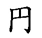

《域外小说集》第一册[744]
是集所录，率皆近世名家短篇。结构缜密，情思幽眇。各国竞先选译，斐然为文学之新宗，我国独阙如焉。因慎为译述，抽意以期于信，绎辞以求其达。先成第一册，凡波兰一篇，美一篇，俄五篇[745]。新纪文潮，灌注中夏，此其滥觞矣！至若装订新异，纸张精致，亦近日小说所未睍也。每册小银[746]三角，现银批售及十册者九折，五十册者八折。总寄售处：上海英租界后马路乾记弄广昌隆绸庄。 会稽周树人白
《劲草》译本序（残稿）[747]
藁，比附原著，绎辞意，与《不测之威》[748]绝异。因念欧人慎重译事，往往一书有重译至数本者，即以我国论，《鲁滨孙漂流记》，《迦因小传》[749]，亦两本并行，不相妨害。爰加厘订，使益近于信达。托氏[750]撰述之真，得以表著；而译者求诚之志，或亦稍遂矣。原书名为《公爵琐勒布略尼》，谊曰银氏[751]；其称摩洛淑夫者霜也[752]。坚洁之操，不挠于浊世，故译称《劲草》云。
著者托尔斯多，名亚历舍，与勒夫·托尔斯多Lyof Tolstoi[753]有别。勒夫为其从弟，著述极富，晚年归依宗教，别立谊谛，称为十九世纪之先知。我国议论，往往并为一人，特附辩于此。己酉三月译者又识。
注 释
[744] 本篇最初刊于1909年4月17日上海《时报》第一版。原无标点。
《域外小说集》 鲁迅与周作人合译的外国短篇小说选集，共两册。1909年3月、7月在日本东京神田印刷所印刷，署“会稽周氏兄弟纂译”，周树人发行，东京群益书店和上海广昌隆绸庄寄售。第一册收鲁迅所作“序言”、“略例”及“杂识”中的部分文字，另有翻译的俄国安特莱夫的短篇《谩》和《默》。
[745] 《域外小说集》第一册所收七篇作品，除鲁迅翻译的俄国两篇外，还有周作人翻译的五篇：波兰显克微支的《乐人扬珂》，俄国契诃夫的《戚施》和《塞外》、迦尔洵的《邂逅》，以及英国淮尔特（通译王尔德）的《安乐王子》。文中“美一篇”，当为“英一篇”。
[746]

日本货币单位：圆。[747] 本篇据手稿编入，是鲁迅1909年代周作人为其《劲草》译本所写的序言残稿，原无标题，有句读。
《劲草》，俄国阿·康·托尔斯泰1862年所写的一部历史小说，原名《Князъ Серебряный》，现译《谢历勃里亚尼公爵》。它以伊凡四世时代的部分历史事件为素材，反映十六世纪俄国人民反对沙皇统治的斗争。周作人的译本未印行。
[748] 《不测之威》 《谢历勃里亚尼公爵》的另一种译本，由英文转译，1908年上海商务印书馆翻译出版。
[749] 《鲁滨孙漂流记》 长篇小说，英国作家笛福（1660—1731）著。当时有沈祖芬（署钱塘跛少年）和林纾的两种中译本。沈译本于1902年由杭州惠兰学堂印刷，上海开明书店发行，题为《绝岛飘流记》。林译本于1906年由商务印书馆出版。《迦因小传》，长篇小说，英国作家哈葛德（1856—1925）著。该书的下半部曾由蟠溪子（杨紫麟）译成中文，于1903年由上海文明书局出版。后来林纾又经魏易口述，译出全文，于1905年2月由商务印书馆出版。
[750] 托氏 阿·康·托尔斯泰（А.К.Толстой，1817—1875），俄国诗人、剧作家。著有长篇历史小说《谢历勃里亚尼公爵》和历史剧三部曲《伊凡雷帝之死》、《沙皇费多尔》、《沙皇鲍里斯》等。
[751] 银氏 俄文姓氏Серебряный的意译。
[752] 摩洛淑夫 《劲草》主人公的姓，是俄语Морoзов的音译，本意为霜。
[753] 勒夫·托尔斯多 即列夫·托尔斯泰，参看本卷第37页注〔16〕。他是阿·康·托尔斯泰同曾祖父的堂弟。